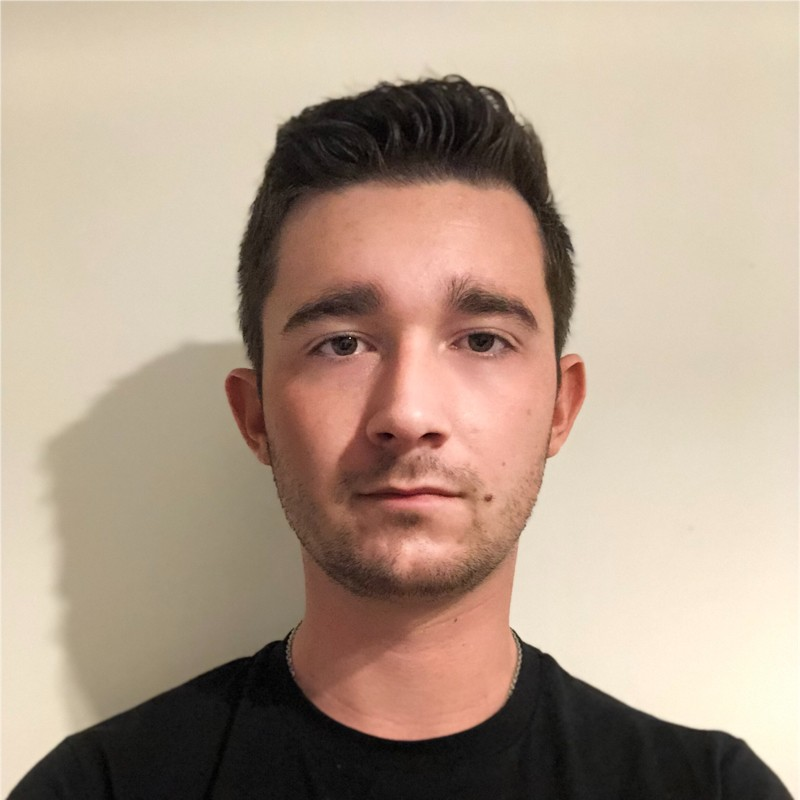
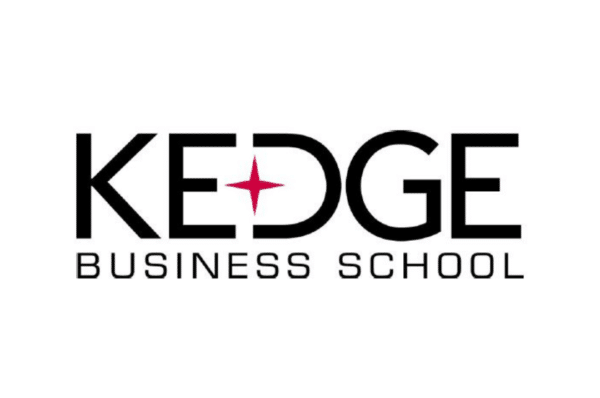
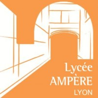
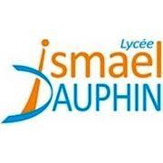
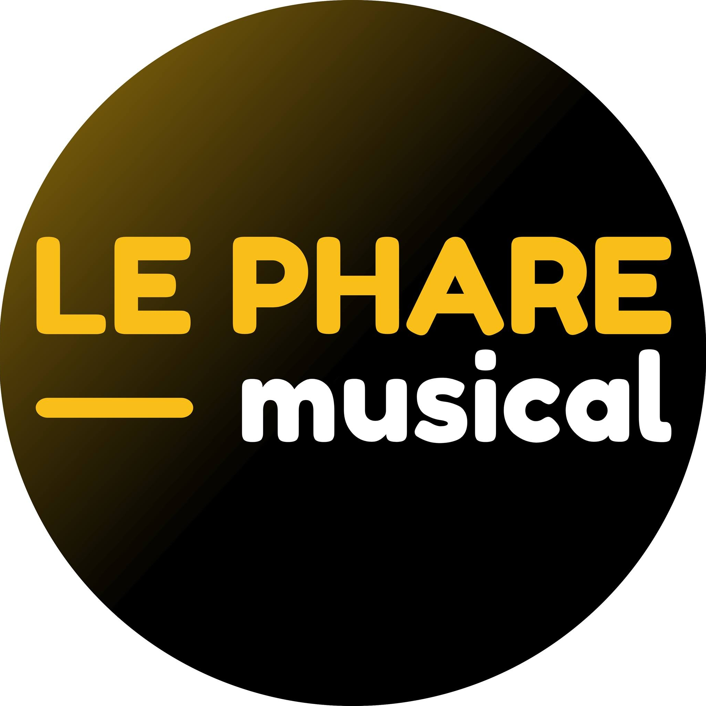
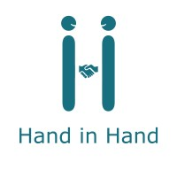
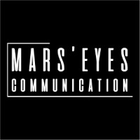
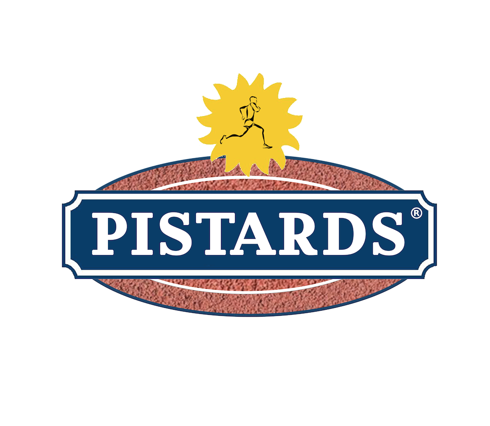

Né le 07/07/2001
Véhiculé

Actuellement en première année (L3) du Programme Grande École de Kedge BS sur le campus de Marseille, mon projet professionnel actuel est de m'orienter vers le secteur de la communication et du marketing digital.



Baccalauréat Économique et Social (ES), Mention TB / Section Sport-étude Athlétisme et Option Théâtre.




204 Rue Breteuil, 13006 Marseille
06 28 02 31 35